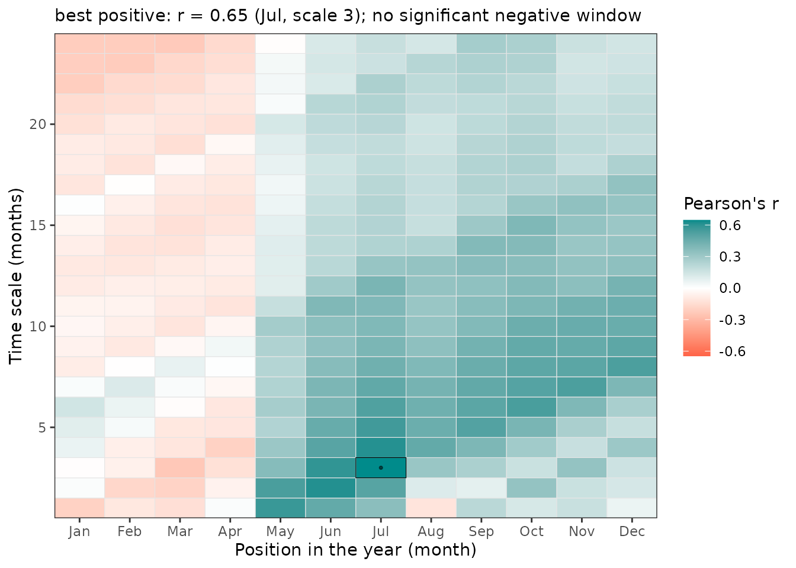
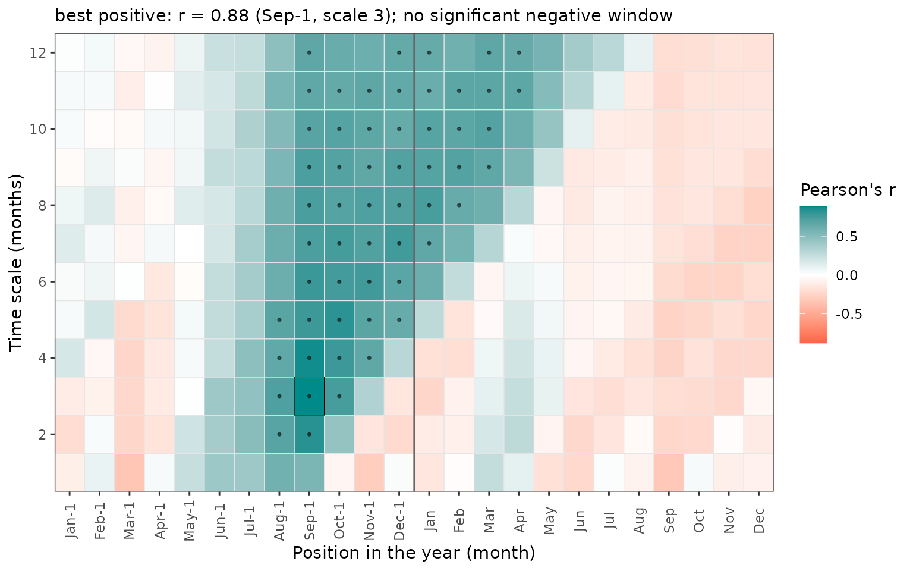

Relating the index to annual series: finding the best time scale
S. Beguería
Source:vignettes/scale_scan.Rmd
scale_scan.RmdMany variables observed once a year depend on drought. Tree-ring widths, crop yields, the annual flow of a river or the level of a reservoir at the end of the summer are examples. Each of them responds to the water balance of a particular part of the year, accumulated over a particular length of time. A crop may depend on the rain of the three months before harvest. A reservoir may integrate the water balance of a whole year.
The SPEI and the SPI can be computed at many time scales. The value
of the index in a given month at a time scale of s months
summarizes the water balance of the s months ending in that
month. So the index at a month and a time scale defines a window of
time. Correlating the annual series with the index in every month and at
every time scale shows which window the series responds to most. The
function scale_scan() does this, and
scale_extract() gives the index series of the chosen
window.
This approach has been used to relate the SPEI and the SPI to tree-ring growth across a climatic gradient (Pasho et al., 2011), to map the time scales at which vegetation responds to drought across the world’s biomes (Vicente-Serrano et al., 2013), and to study how thinning changes the sensitivity of tree growth to hydric and thermal stress in four widely planted pine species (Manrique-Alba et al., 2025).
library(SPEI)
data(wichita)
wichita <- ts(wichita[, -c(1, 2)], start = c(1980, 1), frequency = 12)
bal <- wichita[, "PRCP"] - hargreaves(wichita[, "TMIN"], wichita[, "TMAX"],
lat = 37.6475, verbose = FALSE
)The package has no annual series to correlate with the
wichita climate. All the annual series in this vignette are
synthetic. They are built from the water balance of
Wichita plus random noise, so that we know which window they respond to.
A small helper adds up the water balance of some months for each year,
and standardizes it:
years <- 1980:2011
# Standardized sum of `x` over `months`, for each year in `years`;
# `back = 1` takes the months of the previous year.
season <- function(x, months, back = 0) {
sel <- cycle(x) %in% months
v <- tapply(x[sel], floor(time(x))[sel], sum)
v <- v[as.character(years - back)]
as.numeric((v - mean(v, na.rm = TRUE)) / sd(v, na.rm = TRUE))
}The annual series
The annual series must contain only the signal that we want to relate to drought. Other sources of variation over time should be removed first. Crop yields usually grow over the years because of better varieties and management. Tree rings get narrower as the tree grows older. These trends are not related to drought, but they add variance to the series, and they can create spurious correlations with any index that also has a trend.
Our first synthetic series is a crop yield. It grows by 0.05 t/ha per year, and it responds to the water balance of May to July (three months ending in July):
set.seed(2)
yield <- 3 + 0.05 * (years - 1980) + 0.4 * season(bal, 5:7) +
rnorm(length(years), sd = 0.3)
yield <- ts(yield, start = 1980, frequency = 1)
plot(yield, ylab = "Yield (t/ha)", xlab = "Year")The annual series is a time series with frequency 1, or a data frame with the years in the first column and the values in the second.
Running the scan
scale_scan() takes the water balance, computes the SPEI
at the time scales in scales, and correlates the annual
series with the index in each month and at each time scale:
sc <- scale_scan(bal, yield, scales = 1:24)
sc
#> Correlation scan of an annual series with the SPEI
#> Positions in the year: 12 (months)
#> Time scales: 1, 2, 3, 4, 5, 6, 7, 8, 9, 10, 11, 12, 13, 14, 15, 16, 17, 18, 19, 20, 21, 22, 23, 24
#> Years of the annual series: 1980-2011
#> Correlation: pearson; p-value adjustment: holm; alpha = 0.05
#> Significant cells: 0 of 288
#>
#> Best windows:
#> sign lag cycle label scale r p p.adj n
#> positive NA NA <NA> NA NA NA NA NA
#> negative NA NA <NA> NA NA NA NA NANo window is significant. The trend in the yield hides the climate
signal. With detrend = TRUE a linear trend is removed from
the annual series before computing the correlations:
sc <- scale_scan(bal, yield, scales = 1:24, detrend = TRUE)
sc
#> Correlation scan of an annual series with the SPEI
#> Positions in the year: 12 (months)
#> Time scales: 1, 2, 3, 4, 5, 6, 7, 8, 9, 10, 11, 12, 13, 14, 15, 16, 17, 18, 19, 20, 21, 22, 23, 24
#> Years of the annual series: 1980-2011 (detrended)
#> Correlation: pearson; p-value adjustment: holm; alpha = 0.05
#> Significant cells: 1 of 288
#>
#> Best windows:
#> sign lag cycle label scale r p p.adj n
#> positive 0 7 Jul 3 0.646 6.43e-05 0.0185 32
#> negative NA NA <NA> NA NA NA NA NAThe linear detrending is enough here, because the synthetic trend is
linear. Real series often need other methods, such as splines for
tree-ring widths. In that case detrend the series before calling
scale_scan(), and leave detrend = FALSE.
Reading the heatmap
The plot method draws the correlations as a heatmap. The
months are on the horizontal axis and the time scales on the vertical
axis. The dots mark the cells that are significant after adjusting for
multiple testing, and the black outlines show the best windows:
plot(sc)
The strongest correlations are around July at short time scales, as
expected. They fade at longer time scales, which add months that do not
affect the yield. With sig = "mask" the non-significant
cells are left blank.
The results are kept in the object. sc$cor holds the
correlations, with one row per month and one column per time scale.
sc$p and sc$p.adj hold the p-values before and
after the adjustment, and sc$n the number of years used in
each cell.
round(sc$cor[5:9, 1:6], 2)
#> scale
#> position 1 2 3 4 5 6
#> May 0.58 0.54 0.37 0.31 0.24 0.28
#> Jun 0.47 0.62 0.59 0.50 0.46 0.41
#> Jul 0.36 0.50 0.65 0.61 0.56 0.52
#> Aug -0.12 0.11 0.31 0.47 0.45 0.44
#> Sep 0.21 0.08 0.26 0.40 0.51 0.49The best windows and multiple testing
The best windows are the cells with the highest and the lowest correlation, among those that are significant:
sc$best
#> sign lag cycle label scale r p p.adj n
#> 1 positive 0 7 Jul 3 0.6463505 6.43329e-05 0.01852788 32
#> 2 negative NA NA <NA> NA NA NA NA NAThe scan above tests 288 cells. With so many tests, some cells will
have a low p-value by chance. At a 5% level, about 14 of 288 cells would
be ‘significant’ with an annual series of pure noise. For this reason
the p-values are adjusted for multiple testing, across all the cells.
The default method, Holm’s, keeps the probability of any false positive
among all the cells below alpha. Other methods can be
chosen with p.adjust (see ?p.adjust). With
p.adjust = "none" many more cells are marked, but most of
them are only neighbours of the best one:
sc_none <- scale_scan(bal, yield, scales = 1:24, detrend = TRUE,
p.adjust = "none"
)
sum(sc_none$p.adj <= 0.05, na.rm = TRUE)
#> [1] 62
sum(sc$p.adj <= 0.05, na.rm = TRUE)
#> [1] 1The adjustment is conservative, because neighbouring cells share most
of their data. With short series it may leave no significant cell even
when there is a real signal. The unadjusted p-values are always in
sc$p.
Conditions of the previous year
Some annual series also depend on the conditions of the previous
year. Tree growth, for example, often depends on the water stored at the
end of the previous growing season. Time scales longer than the month
reach into the previous year (a time scale of 12 in March covers April
of the previous year to March), but they always include the months of
the current year too. The argument lag scans the months of
previous years directly: lag = 0:1 correlates the annual
series of year Y with the index of year Y and of year Y-1.
Our second synthetic series is a tree-ring index that responds to the water balance of July to September of the previous year:
set.seed(5)
rings <- 1 + 0.2 * season(bal, 7:9, back = 1) +
rnorm(length(years), sd = 0.1)
rings <- ts(rings, start = 1980, frequency = 1)
sc_lag <- scale_scan(bal, rings, scales = 1:12, lag = 0:1)
sc_lag$best
#> sign lag cycle label scale r p p.adj n
#> 1 positive 1 9 Sep-1 3 0.8813298 5.96501e-11 1.717923e-08 31
#> 2 negative NA NA <NA> NA NA NA NA NA
plot(sc_lag)
The rows are now in chronological order. Jan-1 to
Dec-1 are the months of the previous year, and
Jan to Dec those of the current year. The best
window is found in September of the previous year at a time scale of
three months. The lag column of best gives the
year. The adjustment of the p-values covers all the cells, so the scan
with lag = 0:1 is stricter than one with
lag = 0.
Extracting the series of a window
scale_extract() returns the annual series of the index
for a window, by default the best positive one. It is aligned with the
annual series: for a window with a lag of one year, the value of year Y
is the index of year Y-1.
spei_best <- scale_extract(sc_lag)
spei_best
#> Time Series:
#> Start = 1981
#> End = 2012
#> Frequency = 1
#> [1] -1.48867451 -0.71930307 -1.34860096 -0.65348252 -1.52352143 0.69280585
#> [7] 0.89844855 0.54959022 -1.58145500 1.64767443 -1.02200074 0.30817469
#> [13] 0.18316606 0.02730034 0.00772342 0.54060341 1.05757367 1.05659682
#> [19] -0.04998234 1.16393587 -1.33884704 -0.96204096 -0.41948052 0.35957166
#> [25] 0.16991899 1.39105593 -0.26118860 -0.18295225 1.98950323 0.86276091
#> [31] -0.03524548 -1.24128393
#> attr(,"cycle")
#> [1] 9
#> attr(,"scale")
#> [1] 3
#> attr(,"lag")
#> [1] 1The series covers all the years of the climate data, shifted by the
lag (here 1981 to 2012), so it does not span the same years as the
annual series. Use ts.intersect() to align them by year
before using them together in other models. Note that lm()
does not align time series by itself.
d <- ts.intersect(rings, spei_best)
fit <- lm(rings ~ spei_best, data = d)
summary(fit)$r.squared
#> [1] 0.7767422Plotting the two series together shows how closely the index of the best window follows the annual series. They are in different units, so here the ring series is standardized (mean 0, standard deviation 1) to plot it on the scale of the index:
rings_std <- (rings - mean(rings, na.rm = TRUE)) / sd(rings, na.rm = TRUE)
plot(spei_best, type = "l", col = "red", lwd = 2,
ylim = range(c(spei_best, rings_std), na.rm = TRUE),
xlab = "Year", ylab = "Standardized value"
)
lines(rings_std, col = "black", lwd = 2)
abline(h = 0, lty = 3)
legend("bottomleft", c("Ring width (standardized)", "SPEI, best window"),
col = c("black", "red"), lwd = 2, bty = "n"
)
Any other window can be extracted by giving cycle,
scale and lag:
spei_jul6 <- scale_extract(sc_lag, cycle = 7, scale = 6, lag = 0)The correlation of the best window is chosen as the highest of many. It is biased upwards, so the strength of the relationship should be checked with independent data when possible.
Options of the index
Options for spei() can be passed through
scale_scan(), for example a reference period or a kernel.
With index = "spi" the SPI is computed instead, from a
precipitation series.
sc_spi <- scale_scan(wichita[, "PRCP"], yield,
scales = 1:12, index = "spi",
detrend = TRUE, distribution = "PearsonIII"
)
sc_spi$best
#> sign lag cycle label scale r p p.adj n
#> 1 positive 0 7 Jul 3 0.6293285 0.0001140446 0.01642242 32
#> 2 negative NA NA <NA> NA NA NA NA NAThe index can also be computed beforehand and passed with
index = "precomputed", as a time series with one column per
time scale. The time scales are taken from the column names, or given in
scales:
idx <- sapply(c(1, 3, 6, 12), function(s) {
spei(bal, s, verbose = FALSE)$fitted
})
idx <- ts(idx, start = c(1980, 1), frequency = 12)
colnames(idx) <- c("SPEI-1", "SPEI-3", "SPEI-6", "SPEI-12")
scale_scan(idx, yield, index = "precomputed", detrend = TRUE)$best
#> sign lag cycle label scale r p p.adj n
#> 1 positive 0 7 Jul 3 0.6463505 6.43329e-05 0.003087979 32
#> 2 negative NA NA <NA> NA NA NA NA NAThis is useful to scan an index computed elsewhere, or a set of time scales computed once and used for several annual series.
Other frequencies
The scan is not limited to monthly data. The position of each value
in the year comes from the frequency of the time series. Weekly data
(frequency 52) give one row per week, labelled W1 to
W52, and W1-1 to W52-1 for the
previous year. The time scales are then in weeks:
# bal_week: a weekly water balance, as a ts with frequency 52
sc_week <- scale_scan(bal_week, rings, scales = seq(2, 52, by = 2))Several annual series
Often there are several series for the same site, such as several trees, or several fields of the same crop. There are two ways to analyse them.
The first one is to average them into a single series, and scan it
once. y can be a time series with one column per series, a
data frame with the years in the first column and one column per series,
or a data frame with repeated years (one row per year and series). All
the values of each year are averaged. y.count keeps the
number of values in each year.
Our synthetic ‘trees’ share a common signal, the water balance of April to June, and each one has its own noise. The noise is large, as it is in real trees:
set.seed(11)
common <- season(bal, 4:6)
trees <- sapply(1:8, function(i) 0.5 * common + rnorm(length(years)))
colnames(trees) <- paste0("tree", 1:8)
trees <- ts(trees, start = 1980, frequency = 1)
sc_mean <- scale_scan(bal, trees, scales = 1:12)
sc_mean$best
#> sign lag cycle label scale r p p.adj n
#> 1 positive 0 6 Jun 3 0.9012124 2.031634e-12 2.925552e-10 32
#> 2 negative NA NA <NA> NA NA NA NA NAThe second one is to scan each series on its own:
per_tree <- lapply(colnames(trees), function(tr) {
scale_scan(bal, trees[, tr], scales = 1:12)$best[1, ]
})
per_tree <- do.call(rbind, per_tree)
cbind(tree = colnames(trees), per_tree[, c("label", "scale", "r", "p.adj")])
#> tree label scale r p.adj
#> 1 tree1 <NA> NA NA NA
#> 2 tree2 Sep 10 0.6159819 3.240556e-02
#> 3 tree3 <NA> NA NA NA
#> 4 tree4 <NA> NA NA NA
#> 5 tree5 Jun 12 0.7570813 1.188443e-04
#> 6 tree6 Jul 4 0.7557850 8.197810e-05
#> 7 tree7 <NA> NA NA NA
#> 8 tree8 Oct 8 0.7677985 4.200797e-05The average has a much stronger and more stable signal than any single tree, because the individual noise cancels out. This is the standard way of building tree-ring chronologies. But averaging is only valid if all the series share the same climate data and respond to it in a similar way. It also hides any difference between sites or individuals. If the series are on different scales, standardize them before averaging.
Scanning each series gives a window for each one, so it can reveal different responses, and each series can have its own climate data. But each scan has more noise, and there are more tests in total. In the example above, the windows of the single trees are scattered, and some trees have no significant window, although all of them respond to the same months.
References
Manrique-Alba, À., Beguería, S., Camarero, J.J., Molina, A.J., Barberá, G.G., Blanco, J.A., Cachinero-Vivar, A.M., Castillo, V.M., del Campo, A.D., Hernández, Á., Imbert, J.B., Jiménez, M.N., Lo, Y.-H., Lucas-Borja, M.E., Moreno, G., Navarro, F.B., Navarro-Cerrillo, R.M., Ripoll, M.Á., Sánchez-Miranda, Á. (2025). Adaptive responses to thinning: growth and sensitivity to hydric and thermal stress in four widely planted pine species. Agricultural and Forest Meteorology, 373, 110777. https://doi.org/10.1016/j.agrformet.2025.110777
Pasho, E., Camarero, J.J., de Luis, M., Vicente-Serrano, S.M. (2011). Impacts of drought at different time scales on forest growth across a wide climatic gradient in north-eastern Spain. Agricultural and Forest Meteorology, 151(12), 1800–1811. https://doi.org/10.1016/j.agrformet.2011.07.018
Vicente-Serrano, S.M., Gouveia, C., Camarero, J.J., Beguería, S., Trigo, R., López-Moreno, J.I., Azorín-Molina, C., Pasho, E., Lorenzo-Lacruz, J., Revuelto, J., Morán-Tejeda, E., Sanchez-Lorenzo, A. (2013). Response of vegetation to drought time-scales across global land biomes. Proceedings of the National Academy of Sciences, 110(1), 52–57. https://doi.org/10.1073/pnas.1207068110